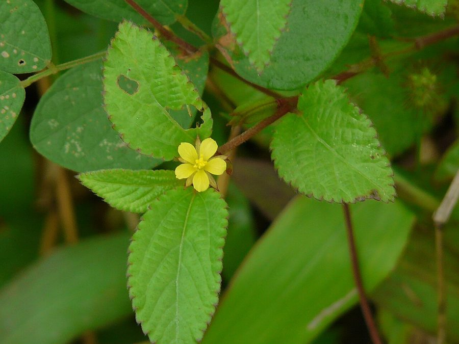

चेंचChench
Corchorus aestuans · Malvaceae · FLR-0222

- Scientific name वैज्ञानिक नाम
- Corchorus aestuans L.
- Family कुल
- Malvaceae
- Hindi हिंदी
- चेंच
- Local names स्थानीय नाम
- chench, chenchh, chench saag, wild jute
- Status here यहाँ की स्थिति
- native
- Movement आवागमन
- Resident, here all year
- IUCN IUCN
- not evaluated
- Review समीक्षा
- audited and independently read
When to look कब देखें
Expected mainly in June, July, August, September, October, November. मुख्यतः जून, जुलाई, अगस्त, सितंबर, अक्टूबर, नवंबर में अपेक्षित।
Uses and possibilities उपयोग और संभावनाएँ
“Traditional medicine” means a documented traditional use, not a claim that it works. Nothing on this page is medical advice.
Drawn from the documented uses in the profile below, where each is labelled traditional, current or a research lead. All uses →
चेंच / Chench
Corchorus aestuans L. — Malvaceae
चेंच — जंगली जूट, अरहर के खेत की किनार में उगता है। बहुत नरम पत्तियाँ — साग के लिए परफेक्ट, पर गाँव में कम लोग इसे जानते हैं। कोमल तनों को रस्सी बनाने के लिए सड़ाया जाता है (retted)। पत्तियों में म्यूसिलेज़ (slippery texture) होता है — इसीलिए कभी-कभी ये "पिछकुली सब्जी" के नाम से जानी जाती हैं। यह पौधा खून के रोगों में आयुर्वेद में काम आता है। मधुमक्खियों का प्रिय हरा चारा भी है।
Quick Identification त्वरित पहचान
| Feature | Description |
|---|---|
| Height & Habit | Erect annual herb, 40–90 cm tall; branched; stems somewhat angular |
| Leaves | Alternate, ovate-lanceolate, 5–12 cm long, margins crenate-serrate, stipules prominent and paired |
| Flowers | Small (5–8 mm diameter), pale yellow, borne in leaf axils, solitary or in pairs |
| Fruits | Distinctive elongated capsules (siliqua-like), 2.5–4 cm long, cylindrical, slightly beaked, with grooved surface |
| Stem | Angular, somewhat ridged, hairy; green or tinged reddish |
| Whole plant | Soft, hairy, somewhat succulent; emits pleasant smell when crushed |
Field tip: A soft, hairy annual with pale yellow flowers and distinctive long, thin seed pods, found in summer vegetable gardens and crop edges. The young tender leaves are edible and have a slippery mucilaginous texture (slime). The name "chench" comes from the Awadhi language.
Morphology आकारिकी
Biometrics:
| Measurement | Range |
|---|---|
| Plant height | 40–90 cm |
| Leaf length | 5–12 cm |
| Leaf width | 2–5 cm |
| Flower diameter | 5–8 mm |
| Fruit (capsule) length | 2.5–4.0 cm |
| Fruit width | 3–5 mm |
Stem and Branching: Erect, dichotomously or trichotomously branched; angular, with 4–6 ridges; sparsely to moderately hairy; green or slightly reddish.
Leaves: Alternate, stipulate (stipules paired, linear-lanceolate, 0.5–1 cm); blade ovate-lanceolate to lanceolate, apex acute or short-acuminate, base oblique, margins crenate-serrate. Both surfaces hairy; venation prominent; texture soft and slightly fleshy; petiole 1–2 cm, hairy.
Inflorescence: Flowers solitary or in pairs in the leaf axils, on short pedicels (3–5 mm).
Flower: Sepals 5, ovate, hairy; petals 5, pale yellow, obovate, 4–5 mm; stamens numerous in a short column; ovary superior, 2–3 carpellate.
Fruit: A distinctive elongated capsule (technically a siliqua-like capsule), 2.5–4.0 cm long, 3–5 mm wide, cylindrical, slightly flattened and angled, with 10–15 shallow longitudinal grooves, beaked at apex, dehiscing longitudinally.
Seeds: Small, numerous (8–12 per fruit), reniform (kidney-shaped), brown, 2–2.5 mm.
हिंदी: तना कोणीय, नरम, सफ़ेद बाल।
पत्ती मृदु, दाँतेदार, सिल्की महसूस।
फूल पीला, छोटा।
फली लंबी, पतली, खाँचेदार।
Behaviour & Ecology व्यवहार और पारिस्थितिकी
Growing season: Corchorus aestuans is a monsoon annual, germinating in June and growing rapidly through July and August. Peak flowering occurs in August and September, with seed maturation in October–November.
Nitrogen accumulation: Like many Malvaceae, Corchorus may accumulate soil nutrients efficiently. When incorporated into soil, it adds organic matter and modest nitrogen.
Pollination: Flowers are visited by small generalist bees for pollen. Nectar is scanty. Flowers open in early morning and close by afternoon.
Fibre properties: The stem fibres are surprisingly long and strong, though finer than cultivated jute (Corchorus capsularis). Retting (water-soaking) for 7–10 days followed by beating separates the fibres from woody tissue. The fibres can be spun into coarse twine or rope.
Ecological niche: Grows as a crop-associated plant in monsoon fields, especially margins of pulse crops (arhar, urad). It is neither a serious pest nor a deliberately cultivated species in most of eastern UP.
हिंदी: बारिश के साथ उगता है, जल्दी बढ़ता है।
पत्ती नरम, साग के लिए बेहतरीन।
तना रेशेदार — रस्सी बनती है।
हवा से सूखे नहीं गिरते।
Life Cycle / Phenology जीवन चक्र
| Month / Season | Event |
|---|---|
| June | Seed germination with monsoon rains |
| July–August | Rapid vegetative growth; tiller and branch development |
| August–September | Flowering; progressively from lower to upper leaves |
| September–October | Fruit maturation and seed development |
| October–November | Seed ripening; plant senescence as temperatures drop |
The complete life cycle is 120–150 days from germination to seed maturity.
हिंदी: जून में अंकुरण।
जुलाई-अगस्त में पूरी वृद्धि।
अगस्त-सितंबर में फूल।
अक्टूबर में फल और बीज।
Associated Species / Interactions संबंधित प्रजातियाँ
- Crop-associated: Grows with Arhar, Urad, and other monsoon pulses; also in vegetable gardens
- Nitrogen-fixing nodule indicator: Sometimes indicates plots with nitrogen supplementation
- Honeybee forage: Pollen attracts Apis cerana and Apis mellifera
- Livestock forage: Young leaves are edible and nutritious for goats and sheep
Agricultural / Human Relevance कृषि प्रासंगिकता
Food use — leafy green: Young tender leaves and growing tips are cooked as saag (spinach-like preparation) in eastern UP villages. The leaves have a characteristic slippery, mucilaginous texture (slime), which is considered a desirable quality. They are boiled briefly with salt and a little oil. This use is documented in traditional food practice and ICAR vegetable leaflet materials.
Fibre use: The stem fibres have historically been used to make coarse twine, rope, and matting. The process involves retting (water-soaking) for 7–10 days followed by mechanical beating to separate the fibres from woody tissue. The resulting fibre is coarser than cultivated jute but suitable for rough cordage and sacking.
Green manure: The plant is sometimes incorporated into soil to improve organic content and add modest nitrogen.
Traditional medicine: According to Kirtikar & Basu (1935), the leaves and roots are used in Ayurvedic and folk medicine to treat blood disorders, fevers, and dysentery. The mucilaginous nature may have mild soothing properties.
हिंदी: साग के लिए पत्तियाँ कोमल, पिछकुली (slippery)।
तना रेशेदार, रस्सी बनाई जाती है।
खेत की मेड़ की खाद बन सकता है।
खून की बीमारी में आयुर्वेद में।
Expected Locally स्थानीय रूप से अपेक्षित
Not a field record. Written from published accounts for eastern Uttar Pradesh. No confirmed local sighting yet — if you have seen it, that is what the atlas needs.
अभी तक स्थानीय पुष्टि नहीं। यह विवरण प्रकाशित स्रोतों से है, किसी अवलोकन से नहीं।
Corchorus aestuans is to be expected in monsoon vegetable gardens and cultivated fields throughout Basti district, from June to October. The species is probably present in most village gardens and crop margins during this period. Look in gardens alongside other monsoon greens and in margins of pulse crops (arhar, urad). The first local record would be a photograph showing the plant with pale yellow flowers and distinctive long thin seed pods, with date and location.
Distribution वितरण
Global range: Widespread throughout tropical Asia, from India through Southeast Asia to East Africa; native to Asia and widely cultivated.
In India: Found throughout the country, especially in monsoon vegetable gardens and cultivated fields from coastal plains to elevations of about 1,500 m.
In Uttar Pradesh: Common in monsoon gardens across all districts; particularly abundant in irrigated vegetable-growing regions.
In Basti district / eastern UP: Expected in village gardens, vegetable plots, and field margins during the monsoon season (June–October).
Research Questions शोध प्रश्न
- How much dietary fibre and mucilage do the leaves of Corchorus aestuans contain compared to other common greens? — Analyze fresh leaf samples; compare nutritional content with spinach and amaranth.
- What is the historical importance of this plant as food and fibre in Basti villages? / बस्ती के गाँवों में चेंच की साग और रस्सी के रूप में क्या महत्ता है? — Interview village elders about traditional uses.
- How strong are the fibre ropes made from Corchorus aestuans compared to commercial jute rope? — Conduct tensile strength tests on retted fibres.
- How many days of retting are optimal for obtaining maximum fibre yield? — Conduct retting trials with different duration.
- Does the plant improve soil fertility when incorporated as green manure? — Measure nitrogen and organic content before and after green manure application.
Similar Species मिलती-जुलती प्रजातियाँ
| Species | How to tell apart | हिंदी |
|---|---|---|
| Corchorus capsularis (Cultivated Jute) | Taller (1.5–2 m); stems much thicker; capsules much longer (4–5 cm) and more upright | जूट — बड़ा पौधा, मोटा तना, बड़ी फली |
| Abelmoschus esculentus (Lady's Finger) | Much larger flowers (4–5 cm); fruit is a round, ridged okra pod (not elongated capsule) | भिंडी — बड़े फूल, गोल फल |
| Hibiscus cannabinus (Kenaf) | Much larger flowers (6–8 cm, yellow with red centre); larger plant overall | केनाफ़ — बड़े फूल, बड़ा पौधा |
Field rule: A soft, hairy annual with pale yellow flowers, characteristic slippery leaves, and distinctive long thin cylindrical seed pods (capsules) with shallow grooves, found in monsoon gardens — is Corchorus aestuans.
Taxonomy & Classification वर्गीकरण
Original description. Corchorus aestuans was described by Carl Linnaeus in 1753 in Species Plantarum, 2: 529. Type locality: India. The genus name Corchorus is derived from the Greek korchoros, a name used for a plant in classical times. The epithet aestuans means "burning" or "hot," referring to warm climates.
Subspecies. Monotypic — no subspecies currently recognised.
Family and order placement. Placed in the order Malvales, family Malvaceae (the mallow family), subfamily Grewioideae. The genus Corchorus contains about 40 species, mostly from tropical regions.
Phylogenetic notes. Corchorus aestuans is closely related to C. capsularis, the cultivated jute species, from which it differs mainly in plant size and fibre quality.
IUCN status rationale. Not evaluated. The species has a stable, wide distribution across tropical Asia with no documented conservation threats.
Photo Gallery फोटो गैलरी
Note: Add field photos tomedia/species/chench/
फोटो निर्देश: बाग़ में पूरा पौधा, पीले फूल, खाँचेदार फली, और नरम पत्तियाँ।
Photos needed आवश्यक फोटो
- [ ] Plant in vegetable garden (बाग़ में पूरा पौधा)
- [ ] Pale yellow flowers (पीले फूल — विस्तार)
- [ ] Distinctive grooved capsule/pods (खाँचेदार फली)
- [ ] Young edible leaves (साग के लिए पत्तियाँ)
No photos yet — add field photos to media/species/chench/ and run node scripts/sync_photos.js.
References संदर्भ
- Linnaeus, C. (1753). Species Plantarum, 2: 529. Laurentii Salvii, Holmiae. [original description]
- Kirtikar, K.R. & Basu, B.D. (1935). Indian Medicinal Plants, Vol. II. Lalit Mohan Basu, Allahabad.
- Hooker, J.D. (1885). Flora of British India, Vol. 1. L. Reeve & Co., London.
- Indian Council of Agricultural Research (2021). Handbook of Agriculture. ICAR, New Delhi.
- Botanical Survey of India. State Flora Series: Flora of Uttar Pradesh. BSI, Kolkata.
- GBIF Occurrence Data — Corchorus aestuans, India (2010–2025).
Source file: species/flora/crops_associated/chench.md